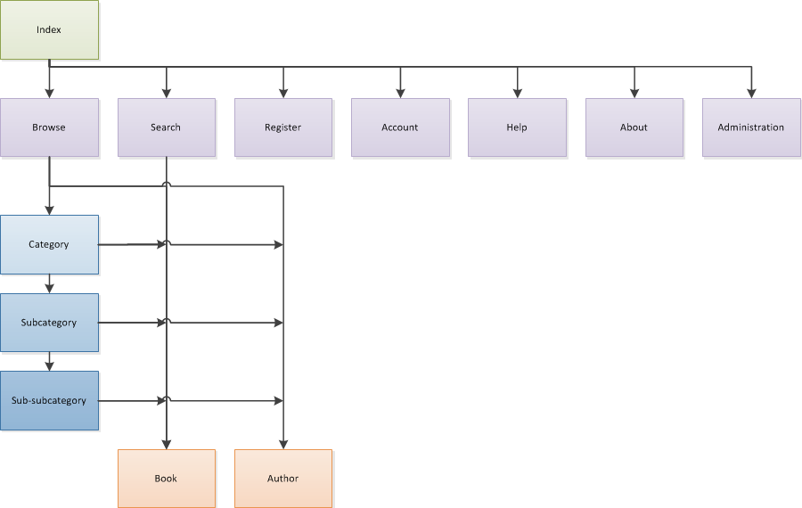

Heading font: Droid Serif
Content font: Helvetica Neue
The heading font is a Serif font with a low weight. The serif of the headings stands out agains the sans-serif content, providing emphasis to the headings. The low weight of the font makes it suitable at lower sizes, which is important especially on the library page where the headings for each book can be quite small.
The content font is a derivative of Helvetica, one of the most common fonts on the web. Helvetica is a familiar font, making the website blend better with the rest of the web. The familiarity of Helvetica helps can help it's readability.
Heading colour: #317E0C
Link colour: #369B07
Navbar base colour: #39A507
The colour scheme of the website can be described as 'green and white'. This was chosen in order to emphasise the point of environmental friendliness that the client wishes to portray. Using so much green also creates an emotional impression of 'freshness.'
Borders have been largely avoided throughout the website. Instead, white space and backgrounds have been used to delineate sections. This helps reduce visual clutter on the site. Sometimes horizontal lines have been used as further clues as to where each section begins and ends. On the library page a 'well' effect has been used to seperate the sidebar from the content. As the only page with seperate vertical sections it was important to make sure that the sections were clearly seperate. Using whitespace in this case is possible but less effective, and would require a greater page width in order to be clear. A greater width is not desirable as it would sacrifice compatibility with lower screen resolutions (this site is designed to be compatible down to 1024x768).
I have assumed that the main intention of visitors to the site will be to find a specific book, books by an author, or books in a series. This is because they are either return visitors and understand the purpose of the website or they have searched for something similar to 'ebook library' using a search engine and have been directed to the eGreen website. To reflect this, the index page of the website is Google-esque, exposing mainly the search feature of the website. This will let visitors quickly find the things that they have come to find, without distracting them with the clutter of the library page.

This is why I chose this font